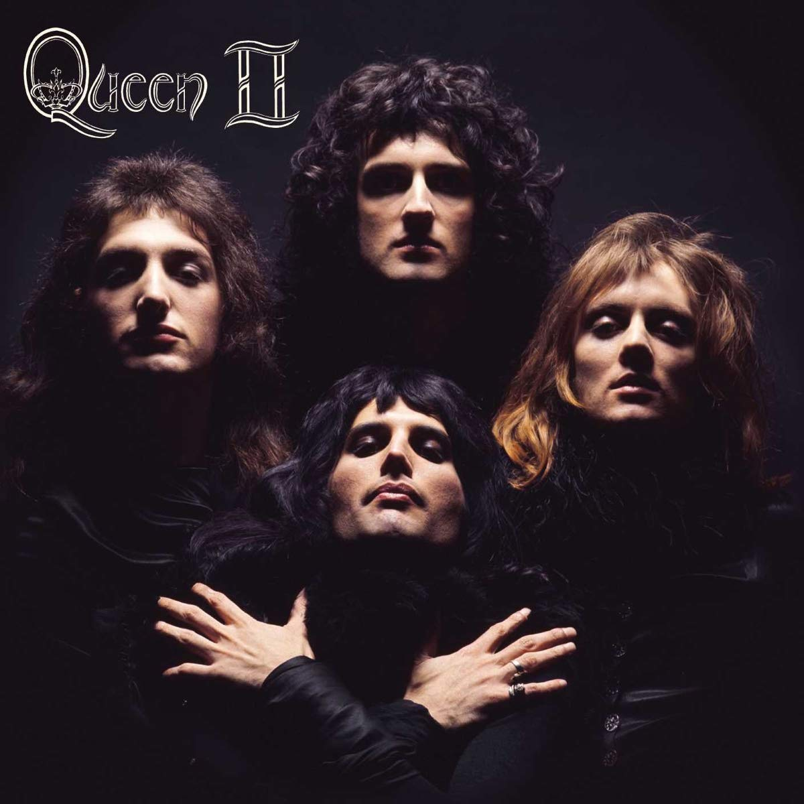
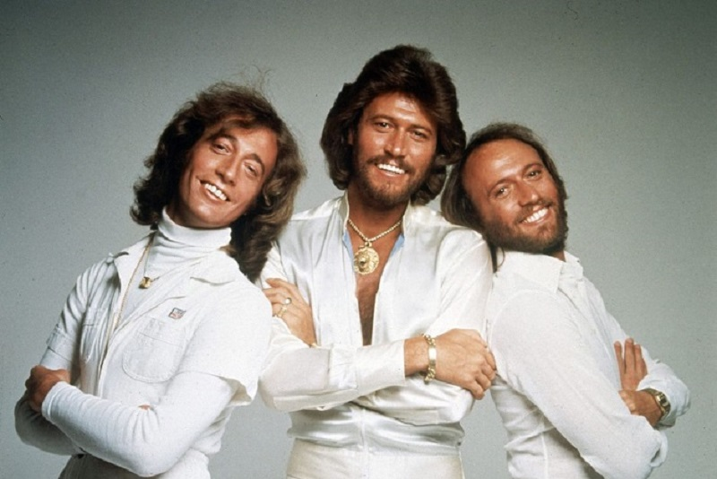
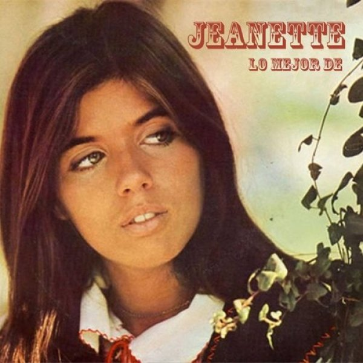
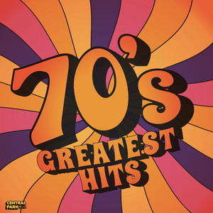

Queen
Rock clásico británico
Queen fue una de las bandas más influyentes de los años 70, mezclando rock, ópera y teatralidad en sus presentaciones.
Playlist destacada

Bee Gees
Pop / Disco
Los Bee Gees dominaron la música disco en los años 70, con armonías únicas y un estilo inconfundible.
Playlist destacada

Led Zeppelin
Rock clásico británico
Led Zeppelin fue una de las bandas más influyentes de los años 70, mezclando rock, blues y elementos místicos en sus presentaciones.
Playlist destacada

Jeanette
Balada romántica
Jeanette destacó en los años 70 con un estilo suave, melódico y emocional que marcó a toda una generación.
Playlist destacada

Curiosidades de los años 70
Hitos destacados de la industria musical de los años 70:
° El fatídico "Club de los 27": Entre 1970 y 1971, la industria quedó conmocionada por la muerte a los 27 años de tres iconos: Jimi Hendrix (asfixia en 1970), Janis Joplin (sobredosis en 1970) y Jim Morrison (1971).
°La ruptura de The Beatles: En abril de 1970, Paul McCartney anunció la separación de la banda, marcando el fin de una era y el comienzo de exitosas carreras en solitario de los cuatro miembros (con álbumes como All Things Must Pass de Harrison o Imagine de Lennon).
°La era disco y el "Four-on-the-Floor": La música disco dominó la segunda mitad de la década, popularizando el ritmo de bombo "four-on-the-floor" (un golpe en cada tiempo) creado por Earl Young, popularizado por Bee Gees y Donna Summer.
La invención del Heavy Metal: Black Sabbath es ampliamente acreditado por definir el género con un sonido más oscuro y pesado, diferente al rock bluesero dominante a finales de los 60.
Cambio en los formatos de consumo: Aunque el vinilo seguía siendo el rey, el casete comenzó a ganar terreno, sentando las bases para la portabilidad que más tarde revolucionaría el walkman.